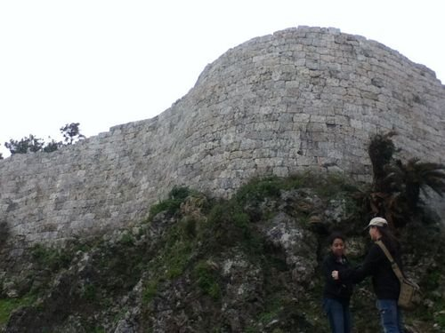

CHAPTER 01 ・ 1372 – 1392
從浦添渡海：朝貢體制與閩人三十六姓
察度王 ・ 浦添城 ・ 閩人三十六姓

縮小、壓縮，未裁切
1372 年（明洪武五年），明太祖遣行人楊載齎詔書渡海至琉球。當時琉球尚未統一為一國，駐節於浦添城的中山王察度率先遣弟泰期赴明朝貢，揭開明琉宗藩朝貢與冊封往來的序幕——早在尚巴志遷都首里之前，浦添已是琉球面向海路的王權起點。
隨著往來漸密，琉球急需操舟造船、測算海圖與通曉漢文表奏的人才。1392 年（洪武二十五年），明廷下賜擅長航海與文墨的「閩人三十六姓」移居琉球（「三十六姓」為泛稱，涵蓋蔡、鄭、林、梁、金、陳等福建氏族，多來自福州一帶）。他們落腳那霸港西南的浮島高地，築起以「唐榮」為漢名的久米村。
地圖據點